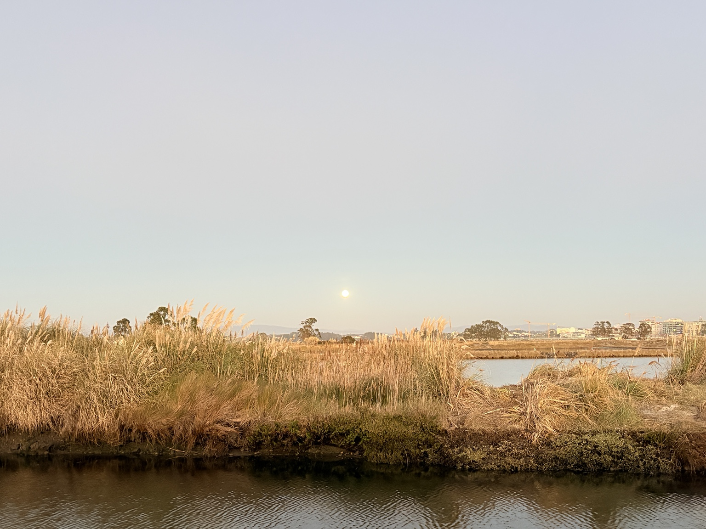

Antiga Lota — a waterfront at a crossroads
Just outside Aveiro’s city centre, beside the Ria’s canals and salt pans, lies the former fish-auction and port area known as Antiga Lota. The city plans new housing, a hotel and shops here. But what if we restored this shoreline for nature instead — while keeping the boating and maritime activities already here?
Discover the place and the plans →Antiga Lota — que futuro para esta margem?
Mesmo perto do centro de Aveiro, junto aos canais e às salinas da Ria, fica a Antiga Lota, uma antiga zona de lota de peixe e atividade portuária. A Câmara prevê aqui habitação, um hotel e lojas. Mas e se recuperássemos esta margem para a natureza, mantendo as atividades náuticas e de formação marítima que já existem?
Conhecer o lugar e os planos →